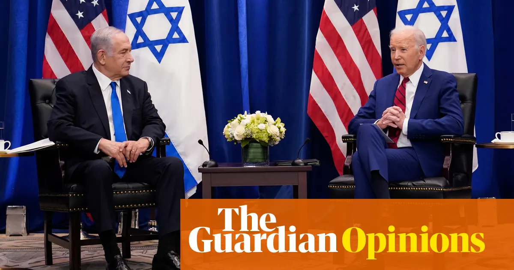
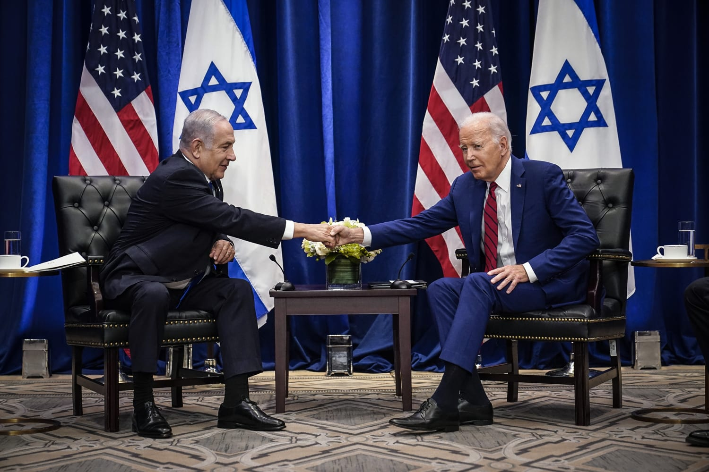

BENNETT, COLEMQN & co.LTD | ESTABLISHED 1838 | TIMES OF INDIA.COM  NEW DELHI | MONDAY,NOVEMBER 17, 2008 | Pages 46 | Price: RS 2.50
NEW DELHI | MONDAY,NOVEMBER 17, 2008 | Pages 46 | Price: RS 2.50
BENNETT, COLEMQN & co.LTD | ESTABLISHED 1838 | TIMES OF INDIA.COM NEW DELHI | MONDAY,NOVEMBER 17, 2008 | Pages 46 | Price: RS 2.50
|
|
As the Budget Session begins in India, the opposition parties are gearing up to challenge the government. Mamata Banerjee, leader of the Trinamool Congress (TMC), and Akhilesh Yadav, leader of the Samajwadi Party (SP), recently addressed a rally where they criticized the stability of the National Democratic Alliance (NDA) government. Both leaders emphasized the need for a new political front to oppose the ruling Bharatiya Janata Party (BJP) in the upcoming 2024 Lok Sabha elections.
Akhilesh Yadav stated that a new alliance, which he referred to as a "gathbandhan" or front, is likely to emerge before the elections. This alliance aims to bring about "parivartan" or change, by uniting various regional parties against the BJP. However, Yadav made it clear that this new front would not include the Congress, suggesting a strategic distance from both the Congress and the BJP. Mamata Banerjee echoed this sentiment, highlighting the need for strong regional alliances. She has previously held similar meetings with other regional leaders, including Odisha Chief Minister Naveen Patnaik and former Karnataka Chief Minister H.D. Kumaraswamy, to discuss maintaining equidistance from the BJP and Congress. This indicates her strategy to build a robust opposition front with regional parties that have significant influence in their respective states. The efforts by Banerjee and Yadav reflect a broader movement among opposition parties to present a united front against the BJP in the 2024 elections. These developments are seen as crucial steps in mobilizing support and strategizing for a major electoral battle ahead (Hindustan Times) (India Today) (India Today) (Business Today). |
Economic Survey 2024 Live Updates: FM Nirmala Sitharaman tables document, India's economic growth projected at 6.5-7% Economic Survey 2024 Live Updates:Finance Minister Nirmala Sitharaman has tabled the Economic Survey document in Parliament today. The Economic Survey is a comprehensive review or annual report of Indian economy during the closed financial year. Prepared by the Economics Division of the Department of Economic Affairs of the Finance Ministry under the guidance of the India's Chief Economic Advisor (CEA). This year's document was released on July 22, a day ahead of the Budget announcement. It functions as a summary of the government's economic performance, major developmental programmes, and policy initiatives; besides also providing an outlook for the upcoming financial year. The Economic Survey document consists of two parts — the first part or Part A includes the country's economic developments and challenges and a broad review of the economy; and second Part B, analyses the past financial year over specific topics such as social security, poverty, education, healthcare, human development, and climate.
|
 The timing of the address also underscores the strained relationship between Netanyahu and U.S. President Joe Biden. Although Biden has publicly supported Israel's right to defend itself, he has criticized certain tactics used by Israel and called for more humanitarian aid to be allowed into Gaza. The Biden administration is also pushing for a ceasefire and a negotiated end to the conflict, a proposal that Netanyahu has been hesitant to accept (The Jerusalem Post). Netanyahu's address to Congress is seen as an attempt to rally support from U.S. lawmakers and the American public, emphasizing the existential threats Israel faces and the need for solidarity against common adversaries. This event will likely be marked by protests and significant media attention, reflecting the deep global and domestic implications of the ongoing conflict (MPR News) (The Jerusalem Post). |